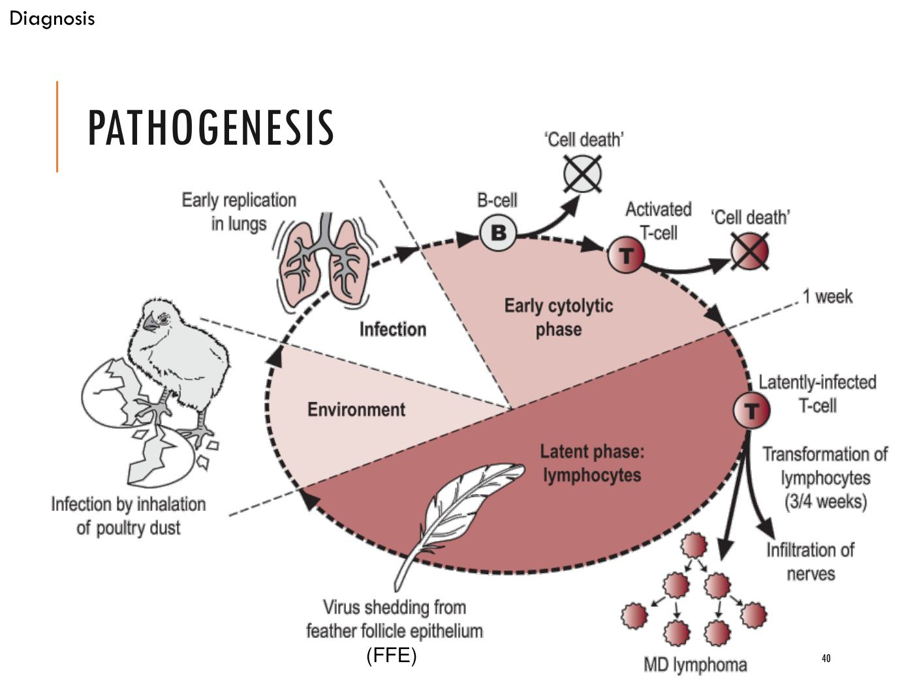

大方向與重點摘要
- 這是什麼病
- 由雞的疱疹病毒（Gallid herpesvirus 2，MDV）引起的T 細胞淋巴增生性疾病：周邊神經腫大造成腿翅麻痺，內臟、皮膚、眼睛長淋巴瘤。
- 為什麼重要
- 全球每年損失 10–20 億美元等級（2004 年估計）；病毒毒力隨時間越來越強（vMDV → vvMDV → vv+MDV）。MD 疫苗是世界上第一個預防腫瘤的疫苗，但它只減少腫瘤，不能阻止感染與排毒。MDV 也是重要的免疫抑制病原。台灣靠疫苗控制超過 20 年。
- 這章要抓的重點
-
- 三個血清型：只有血清型 1 致腫瘤；疫苗用 CVI988（1 型減毒）、SB-1（2 型）、HVT（3 型，火雞疱疹病毒）。
- 傳播：羽毛毛囊上皮釋出完整病毒、皮屑經空氣吸入；終身帶毒；越小接觸越易發病。
- 四種病型：神經型（坐骨神經單側腫大）、內臟型（腺胃圓底燒瓶狀、卵巢花椰菜狀）、皮膚型（毛囊腫大）、眼型（灰眼、瞳孔變形）。
- 診斷原則：要診斷疾病（腫瘤），不是感染；用 PCR 的 meq 基因區分野外株與疫苗株。
- MD vs. 淋巴性白血病 vs. 網狀內皮增生症：年齡、神經病變、華氏囊腫瘤的位置。
- 最容易混淆
- 禽白血病（淋巴性白血病，LL）與網狀內皮增生症（RE）：都是病毒性腫瘤。MD 通常 6 週齡以上任何年齡、常有麻痺與神經病變、腫瘤細胞為多形性 T 細胞；LL 與 RE 不會在 16 週齡以下發生、華氏囊有結節狀腫瘤、通常沒有神經病變。
- 考試可能怎麼問
（推測） - 三個血清型與疫苗株；傳播途徑（毛囊上皮）；四種病型的典型病變；致病機轉（B 細胞 → T 細胞 → 潛伏 → 轉形）；為什麼中和抗體保護有限（細胞依附性病毒）；疫苗失敗原因；MD／LL／RE 鑑別表。
內容以老師講義為主體。標示「補充」的段落（含「讀書補充Note」）是講義以外的延伸；標示「推測」的是依講義強調處推測的出題方向，不是考古題。考試範圍以老師上課為準。圖片為老師講義截圖。
- 淋巴球增生性疾病、有多種病型。
- 吸入毛囊細胞、皮屑而水平傳播。
- 以病毒學技術、病理學檢查共同診斷。
- 需與其他腫瘤疾病（AL、RE）區別。
- 以細胞型疫苗預防（須注意疫苗保存）。
- MDV 為重要的免疫抑制性病原，高風險商業雞場應加強生物安全與飼養管理，避免其他病原合併與繼發性感染。
家禽腫瘤性疾病總覽理解
| 感染性（病毒性）腫瘤 | 非感染性腫瘤 | |
|---|---|---|
| 經濟重要性 | 重要 | 不大 |
| 分布 | 在商業雞群中廣泛流行 | 零星 |
| 年齡 | 侵犯相對年輕的雞 | 比商用雞一般壽命更老的雞 |
三種病毒性可傳染腫瘤必考
| 疾病 | 病毒 | 病毒科 | 核酸 |
|---|---|---|---|
| 馬立克病 | 馬立克病病毒（MDV） | 疱疹病毒 | DNA |
| 禽白血病／肉瘤 | 禽白血病病毒（ALV） | 反轉錄病毒 | RNA |
| 網狀內皮增生症 | 網狀內皮增生症病毒（REV） | 反轉錄病毒 | RNA |
病原與血清型
歷史看過
- 1907 年匈牙利獸醫病理學家 József Marek 描述：周邊神經病變（多發性神經炎）。1926 年發現內臟腫瘤。
- 1950 年代美國稱為內臟淋巴瘤病／急性白血病。1967 年英國 P. M. Biggs 證實是 α 疱疹病毒。
病毒特性必考
| 項目 | 內容 |
|---|---|
| 分類 | 疱疹病毒科、Mardivirus 屬；Gallid herpesvirus 2–3（GaHV） |
| 構造 | 二十面體、150–200 nm、有封套的 DNA 病毒；線性雙股 DNA 約 175 kb、約 190 個蛋白 |
| 複製 | 封套附著 → 脫殼 → 基因依立即早期、早期、晚期表現 → 核鞘組裝 → 出核 → 成熟 → 出芽 |
※ 傳染性喉頭氣管炎病毒（GaHV-1，Iltovirus 屬）也是雞的疱疹病毒，見傳染性喉頭氣管炎。
三個血清型必考
| 血清型 1 | 血清型 2 | 血清型 3 | |
|---|---|---|---|
| 病毒 | Gallid herpesvirus 2 | Gallid herpesvirus 3 | Meleagrid herpesvirus 1（火雞疱疹病毒 HVT） |
| 致腫瘤性 | 致腫瘤 | 不致腫瘤 | 不致腫瘤 |
| 病原型 | vv+MDV（極強毒加）、vvMDV（極強毒）、vMDV（強毒）、mMDV（溫和） | 無毒 | 無毒 |
| 疫苗株 | CVI988／Rispens（減毒） | SB-1 | HVT |
宿主與傳播必考
宿主
- 主要是家雞；部分火雞、鵪鶉；日本的遷徙水禽。
- 可同時感染一株以上的 MDV。
- 品種感受性不同（產生腫瘤的機率不同）。
傳播
- 直接或間接接觸，經空氣傳播。
- 羽毛毛囊上皮（feather follicle epithelium, FFE）中有具感染力的病毒，汙染環境。
- 感染後 2–4 週開始排毒，接著出現症狀；潛伏感染、終身帶毒。
- 年紀越小接觸病毒，發病率越高。
- 多重因素：母雞的腫瘤比公雞多。
雛雞越早接觸越容易發病，而雞舍環境裡的皮屑病毒很難清除（DNA 病毒穩定），所以疫苗要在孵化場 1 日齡或蛋內（第 17–18 天）接種，趕在野外病毒之前建立保護；同時要清除舊墊料、徹底消毒、統進統出。
致病機轉 Pathogenesis必考

※ 補充：早期溶細胞期破壞 B、T 細胞與淋巴器官，這是 MDV 造成免疫抑制、以及極強毒株「急性溶細胞型」淋巴器官萎縮的原因。致腫瘤基因是 meq（講義 p.46）。
臨床型與病型必考
感染後至少 4 週才會出現症狀（潛伏期）；自然發病通常在 6 週齡後，種雞、蛋雞、有色雞（補充：白肉雞飼養期短，較少等到發病）。
依毒力分的臨床型
| 型 | 死亡率 | 主要表現 | 病毒 |
|---|---|---|---|
| 典型（慢性） | < 10–15% | 腿麻痺；神經型、眼型 | — |
| 急性 | 中到高，迅速增加 | 全身性表現、內臟腫瘤（發生率 10–30%，可達 70%） | 強於 vMDV |
| 急性溶細胞型（早期死亡症候群） | 非常高；10–14 日齡死亡 | 淋巴器官萎縮、腫瘤 | 強於 vvMDV |
| 暫時性麻痺 | 低（少見） | 5–18 週發生；運動失調、麻痺 | mMDV |
四種肉眼病型
| 病型 | 怎麼看到 | 病變 |
|---|---|---|
| ① 神經型（慢性） | 外觀、剖檢 | 腿翅麻痺（典型姿勢：一腳前伸一腳後伸，補充）；神經單側或雙側腫大，失去光澤、呈暗灰色（坐骨神經、背根神經）；組織：成熟淋巴球、水腫、大小不一的淋巴球 |
| ② 內臟型（急性） | 剖檢 | 內臟廣泛瀰漫性淋巴瘤：肝（多發腫瘤結節）、脾腫大、腺胃（圓底燒瓶狀、管腔狹窄）、胰臟、卵巢（典型花椰菜狀）、睪丸不對稱（單側）、腎雙側腫大、心臟、肺、胸肌多中心腫瘤；組織：多形性淋巴細胞增生 |
| ③ 皮膚型 | 外觀（屠宰場拔毛後） | 羽毛毛囊腫大、結節，可融合，皮膚發紅 |
| ④ 眼型（慢性） | 外觀 | 虹膜脫色（灰眼）、瞳孔變形、角膜混濁、失明；虹膜與肌肉淋巴細胞增生。疫苗無法完全保護眼型 |
診斷 Diagnosis
根據臨床症狀與肉眼或顯微病變。確診必須診斷出疾病（腫瘤），而不是感染：雞可以持續感染 MDV 卻不發病，而且疫苗大幅減少臨床病例，但不能阻止持續感染與排毒。MD 淋巴瘤由多形性（大小不一）淋巴細胞組成，淋巴性白血病則是一致的細胞群。
病原檢測必考
| 方法 | 內容 |
|---|---|
| 病毒分離 | 白血球層（buffy coat）或組織，接種雞腎細胞（CK）或雞／鴨胚纖維母細胞（CEF／DEF），數天後出現細胞病變或斑塊。血清型 1、3 用 CEF；血清型 2 用 DEF |
| PCR／qPCR | 腫瘤組織、血液、羽毛尖端（毛囊）；可區分病原株與疫苗株；meq 是相關的致腫瘤基因 |
| PCR 判讀例（講義） | MDV1 產物約 320 bp（HVT 為 505 bp）；meq 基因：野外株約 583 bp 一條帶，疫苗株（CVI988）兩條帶約 763 bp 與 583 bp |
| 免疫螢光 | MD：活化 T 細胞抗原；淋巴性白血病：B 細胞抗原；但都不是 MD 腫瘤細胞專一 |
血清學理解
- 感染後 1–2 週出現中和抗體（IgM → IgY）。
- MDV 是細胞依附性病毒（cell-associated）：中和抗體只能擋游離病毒（感染早期、環境中）。
- 方法：瓊脂凝膠免疫擴散、間接螢光抗體。
MD／LL／RE 鑑別必考
| 特徵 | 馬立克病（MD） | 淋巴性白血病（LL） | 網狀內皮增生症（RE） |
|---|---|---|---|
| 年齡 | 任何年齡，通常 6 週齡以上 | 不會在 16 週齡以下 | 不會在 16 週齡以下 |
| 症狀 | 常見麻痺 | 非特異性 | 非特異性 |
| 發生率 | 未接種雞群常 > 5%；接種雞群少見 | 很少 > 5% | 少見 |
| 肉眼病變 | |||
| 神經病變 | 常見 | 無 | 少見 |
| 華氏囊 | 瀰漫性腫大或萎縮 | 結節狀腫瘤 | 結節狀腫瘤 |
| 皮膚、肌肉、腺胃腫瘤，灰眼 | 可能有 | 通常沒有 | 通常沒有 |
| 顯微病變 | |||
| 神經病變 | 有 | 無 | 少見 |
| 肝腫瘤 | 常在血管周圍 | 局部或瀰漫 | 局部 |
| 脾 | 瀰漫 | 常為局部 | 局部或瀰漫 |
| 華氏囊 | 濾泡間腫瘤和／或濾泡萎縮 | 濾泡內腫瘤 | 濾泡內腫瘤 |
| 中樞神經 | 有 | 無 | 無 |
| 皮膚與羽毛毛囊淋巴增生 | 有 | 無 | 無 |
MD 早、有神經、華氏囊濾泡「間」；LL／RE 晚（> 16 週）、沒神經、華氏囊濾泡「內」結節。講義 p.63 也把年齡當第一刀：< 14 週看到神經腫大或內臟腫瘤 → 先想 MD；> 14 週的內臟腫瘤或華氏囊腫瘤 → MD、ALV、REV 都要考慮，用組織病理、免疫組化與 real-time PCR 確診。
※ 禽白血病與網狀內皮增生症的完整筆記見下一頁。
疫苗與疫苗失敗
疫苗必考
- 世界上第一個可用來預防腫瘤的疫苗。
- 機制：產生對抗游離病毒的中和抗體；保護、對抗早期複製，但不能防止感染。
- 常見組合：HVT（對 vMDV）；HVT＋SB-1 或 CVI988（對 vvMDV，部分保護）；HVT＋CVI988＋SB-1（對 vvMDV，部分保護）。
- 接種：孵化場 1 日齡，或蛋內接種（第 17–18 天）。
- 疫苗史：HPRS-16（1 代）→ HVT（2 代）→ HVT＋SB-1（3 代）→ CVI988（4 代）。
挑戰理解
- MDV 毒力隨時間增加，出現急性溶細胞型（10–14 天死亡、淋巴器官萎縮）。
- DNA 病毒穩定；環境中難以清除；細胞依附性；疫苗的使用方式。
疫苗保存與配製必考
- HVT、SB-1、CVI988 是細胞依附性疫苗，保存在 –196°C 液態氮（細胞株如 CEF、DEF）。
- 配製（講義 Merial 圖）：水浴（約 27°C）解凍，安瓿輕輕搖晃、完全解凍立刻取出（不超過 90 秒）；用 18G 針頭慢慢抽入稀釋液、輕輕旋轉、不可用力搖；配好後要不時輕搖，1 小時內用完。
台灣的現況與預防理解
- 靠疫苗控制超過 20 年；依場量身訂做的免疫計畫（HVT＋CVI988 或 SB-1）；一般在孵化場施打再運到飼養場。
- 受 IBD、ND 等免疫抑制的影響。
- 疫苗選擇依場內田間病毒株的強弱、汙染程度、預期感染時間決定；單價保護不足時用雙價。
- 預防：正確接種技術、劑量要足；嚴格生物安全、統進統出；移除舊墊料、徹底清消；降低緊迫（熱、潮濕、過多氨、缺乏飼料與水）；選育抗病品系；避免免疫抑制疾病；使用與種雞不同的疫苗（避免母源抗體干擾，推論）。
- 疫苗有效力價不足（冷鏈、保存、配製、施打不當）
- 雞場衛生管理或生物安全不確實
- 移行（母源）抗體干擾
- 免疫抑制
- 早期接觸野外毒
- 添加抗生素影響疫苗效價：不可使用 Aureomycin、Terramycin、Erythromycin、Tetracycline 等
- 野外毒毒力變異
考試方向（推測）
| 可能的考法 | 答題重點 |
|---|---|
| 三個血清型與疫苗株 | 1 型致腫瘤（CVI988）；2 型 SB-1；3 型 HVT（火雞） |
| 傳播途徑 | 羽毛毛囊上皮 → 皮屑 → 吸入；終身帶毒 |
| 致病機轉 | 肺 → B 細胞 → T 細胞（1 週）→ 潛伏 T 細胞轉形（3 週）→ 神經與內臟；毛囊排毒 |
| 四種病型 | 神經（坐骨神經單側腫大灰色）、內臟（腺胃燒瓶、卵巢花椰菜）、皮膚（毛囊）、眼（灰眼瞳孔變形） |
| 為什麼疫苗不能阻止感染 | 細胞依附性病毒，中和抗體只擋游離病毒 |
| 診斷原則 | 診斷腫瘤不是感染；PCR meq 區分疫苗與野外株 |
| MD vs. LL vs. RE | 年齡、神經、華氏囊（瀰漫／濾泡間 vs. 結節／濾泡內）、腫瘤細胞多形性 |
| 疫苗失敗原因 | 力價不足、母源抗體、免疫抑制、早期感染、抗生素、毒力增強 |
| 疫苗保存 | 液態氮 –196°C；解凍不超過 90 秒；1 小時內用完 |
學習重點整理
練習題 Practice Quiz
先自己作答再點開答案。Q10–Q12 是臨床情境題。
只有血清型 1（Gallid herpesvirus 2）致腫瘤，疫苗株 CVI988/Rispens 是減毒的 1 型；2 型（SB-1）與 3 型（HVT，火雞疱疹病毒）不致腫瘤。
羽毛毛囊上皮（FFE）產生成熟完整病毒，隨皮屑汙染環境，雛雞經空氣吸入感染。
華氏囊結節狀、濾泡內腫瘤是淋巴性白血病與網狀內皮增生症的特徵；MD 的華氏囊是瀰漫性腫大或萎縮、濾泡間腫瘤。眼型是虹膜脫色、瞳孔變形。
環境汙染 → 雛雞吸入 → 肺部吞噬細胞攝入 → 感染 B 細胞（早期溶細胞期）→ 約 1 週感染活化 T 細胞 → 約 3 週潛伏感染的 T 細胞轉形成腫瘤 → 腫瘤細胞浸潤神經或形成內臟淋巴瘤；同時羽毛毛囊上皮釋放病毒到環境。
疫苗大幅減少臨床疾病（腫瘤），但不能阻止持續感染與排毒。MDV 是細胞依附性病毒，中和抗體只能擋游離病毒。所以確診要診斷「腫瘤」，而不是「感染」。
MD 通常 6 週齡以上、常麻痺與神經腫大；淋巴性白血病不會在 16 週齡以下發生、沒有神經病變、華氏囊結節狀腫瘤（濾泡內）。網狀內皮增生症也可能有華氏囊結節，要用 PCR 等確認。
HVT、SB-1、CVI988 是細胞依附性疫苗，保存在 –196°C 液態氮；解凍要快（不超過 90 秒）、輕輕旋轉不可用力搖，配好 1 小時內用完。
檢測致腫瘤基因 meq：講義例子中野外株約 583 bp 一條帶，疫苗株（CVI988）可見兩條帶（約 763 bp 與 583 bp）。檢體用腫瘤組織或羽毛毛囊。另外 MDV1 引子產物約 320 bp、HVT 為 505 bp。
液態氮是正確的保存方式。失敗原因：效力價不足、衛生與生物安全不確實、移行抗體、免疫抑制、早期接觸野外毒、添加 Aureomycin、Terramycin、Erythromycin、Tetracycline 等抗生素、野外毒毒力變異。
(1) 馬立克病：神經型（單側坐骨神經腫大、暗灰、失去光澤、麻痺）加內臟型（腺胃燒瓶狀）；土雞飼養期長、6 週齡以上發病也符合。
(2) 疫苗不能阻止感染，只減少腫瘤；可能原因：疫苗力價不足（液態氮保存、解凍、配製、1 小時內用完沒做到）、母源抗體干擾、免疫抑制（IBD 等）、雛雞太早接觸野外毒、飲水加了四環黴素類或紅黴素、場內是 vvMDV 而只用 HVT 單價。
(3) 腫瘤組織或羽毛毛囊做 PCR 的 meq 基因：野外株一條帶（約 583 bp），CVI988 疫苗株兩條帶；組織病理看多形性淋巴細胞。
(4) 依場內病毒強弱改雙價（HVT＋CVI988 或 SB-1）；確認疫苗冷鏈與施打技術、劑量；清除舊墊料、徹底清消、統進統出，減少雛雞早期暴露；避免免疫抑制病、不在疫苗前後加這些抗生素；使用與種雞不同的疫苗。
急性溶細胞型（早期死亡症候群）：由比 vvMDV 更強的病毒株（vv+MDV）造成，死亡率非常高、10–14 日齡死亡、淋巴器官萎縮。致病機轉中的早期溶細胞期，病毒大量感染並殺死 B 細胞與活化 T 細胞，所以華氏囊、胸腺萎縮；雞在形成腫瘤之前就死亡。這也反映講義說的「MDV 毒力隨時間增加」。
①要用乾淨的水浴（約 27°C）快速解凍，完全解凍立刻取出、不超過 90 秒，不能放桌上慢慢退冰（細胞會死，細胞依附性疫苗失效）。②稀釋時要慢慢用 18G 針頭抽取、輕輕旋轉，不可用力搖。③配好的疫苗要在 1 小時內用完，期間不時輕搖；擺一個上午效價會大幅下降。④器具要清潔消毒、劑量要足。這些就是「疫苗有效力價不足」的典型原因。